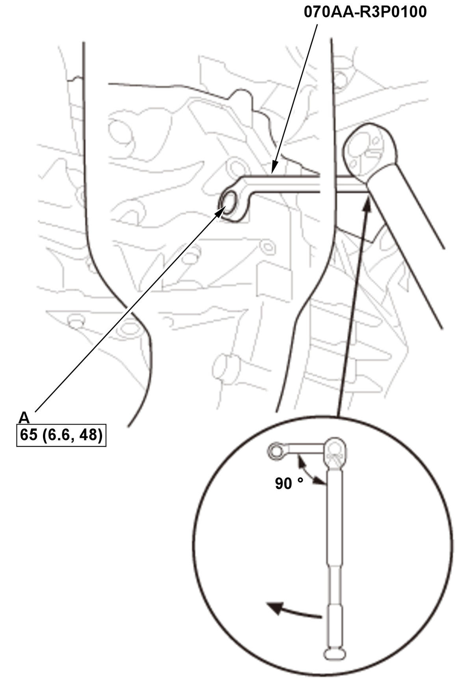
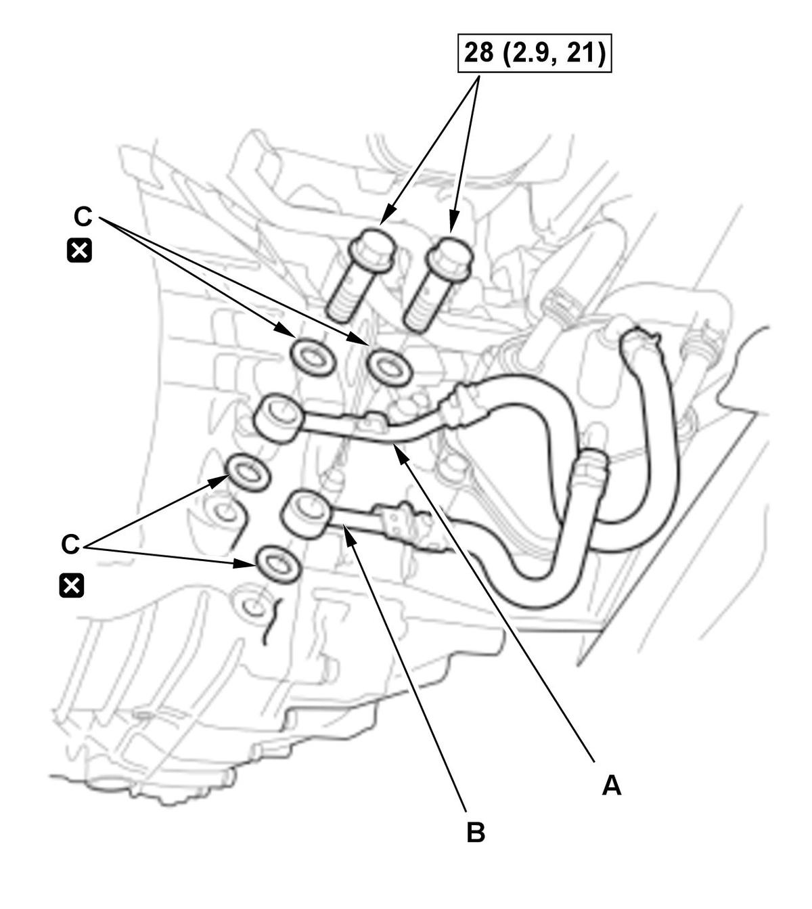
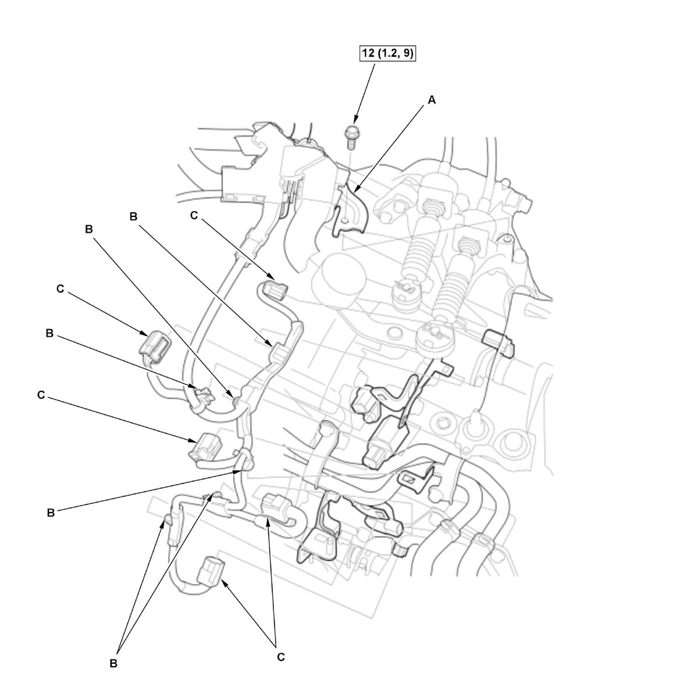
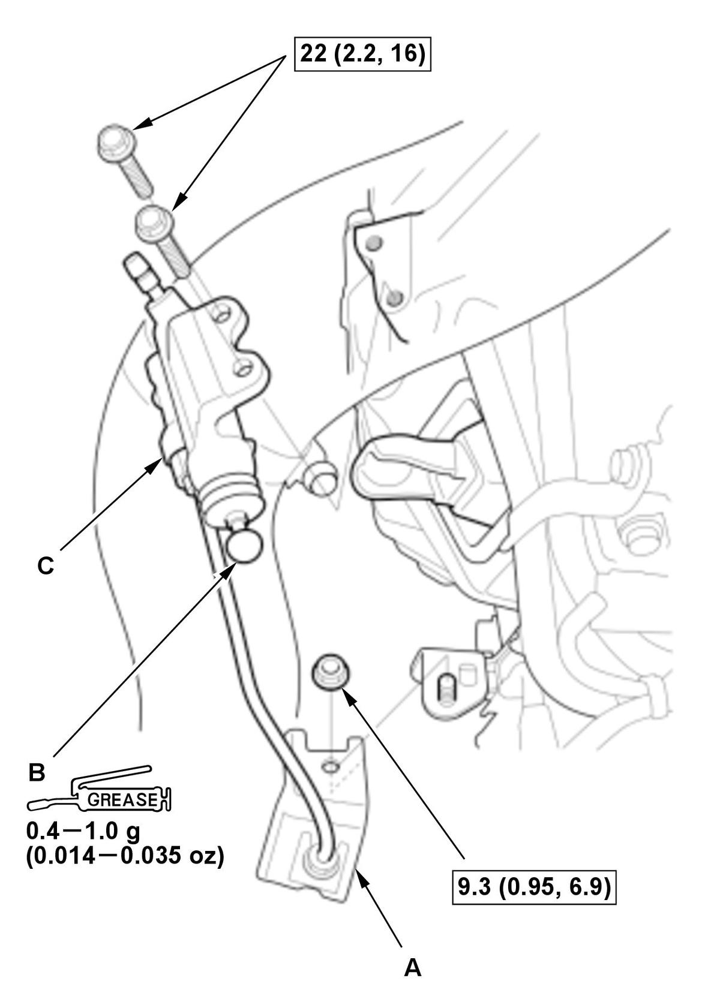

Manual Transmission Removal and Installation (K20C1 (M/T)) (2017 2018 2019 2020 2021): Installation
NOTE:
- How to read the torque specifications .
- Use fender covers to avoid damaging painted surfaces.
- Release Bearing - Check
1. Check the release bearing, then install the release bearing and the release fork with specified grease . - Dowel Pin - Install
NOTE: Refer to the Exploded View as needed during this procedure.
- Transmission - Install
1. Place the transmission on the transmission jack, and raise it to the engine level. 2. Align the transmission mainshaft and the clutch pressure plate.
3. Move the transmission inward until there is no clearance between the transmission housing and the engine block.
- Lower Transmission Assembly Mounting Bolt - Install

Courtesy of HONDA, U.S.A., INC.NOTE: Refer to the Exploded View as needed during this procedure. 1. Set the 17 mm offset socket to the torque wrench as shown.
2. Tighten the lower transmission assembly mounting bolt (A) to the specified torque using the 17 mm offset socket and the torque wrench.
NOTE: In this case, the tightening torque at the torque wrench should be set to 65 N.m (6.6 kgf.m, 48 lbf.ft), because the distance between the lower transmission assembly mounting bolt and the torque wrench is not changed.
- Intermediate Shaft - Install
- Driveshaft Inboard Joint - Connect (Both Sides)
- Clutch Cover - Install
- Front Subframe - Support
1. Set the subframe adapter (VSB02C000016) on a transmission jack (A), line up the slots in the arms with the bolt holes on the corner of the jack base, and tighten the bolts. 2. Attach the subframe adapter to the front subframe (B).
- Front Subframe - Install
- Lower Arm Mounting Bolt - Tighten (Both Sides)
- Front Brace - Install
- Torque Rod Mounting Bolt - Loosely Install
- MTF Cooler - Install
NOTE: The MTF cooler is aluminum part. Be careful not to damage the MTF cooler.
- MTF Cooler Pipe A and B - Install (Transmission Side)Fig 4: MTF Cooler Pipe A And B (Transmission Side) Components With Torque Specifications (K20C1 - M/T - 2017-21)

Courtesy of HONDA, U.S.A., INC.1. Install MTF cooler pipes A and B with new washers (C). - Connector (EPS Subharness) - Connect
- Lower Arm Ball Joint - Connect (Both Sides)
- Tie-Rod End Ball Joint - Connect (Both Sides)
- Lower Stabilizer Link - Connect (Both Sides)
- Stopper Link - Connect (Both Sides)
- Exhaust Pipe A - Install
- Front Suspension Stroke Sensor - Install (Both Sides)
- Connector (Front Suspension Stroke Sensor Subharness) - Connect
Left side
Right side
- Vehicle - Lift Down
- Transmission Mount - Loosely Install
- Upper Transmission Assembly Mounting Bolt - Install
NOTE: Refer to the Exploded View as needed during this procedure.
- Engine Support Hanger - Remove
1. Remove the engine support hanger. 2. Remove the universal lifting eyelet with an about 60 mm (2.36 in) commercially available spacer.
- Engine/Transmission Mount - Tightening Procedure
- Transmission Fluid - Refill
- Water Bypass Pipe - Install
- Change Wire Bracket - Install
- Change Wire - Install
1. Connect the change wires (A). NOTE: Do not wipe off the grease of the change wire ends (B).
2. Install new change wire clips (C).
3. Install the lock pins (D).
4. Check that the transmission shifts into all gears smoothly.
- Engine Wire Harness - Install
1. Install the engine wire harness with the harness holder bracket (A).
Fig 7: Exploded View Of Engine Wire Harness Components With Torque Specifications (K20C1 - M/T - 2017-21)
Courtesy of HONDA, U.S.A., INC.2. Install the harness clamps (B).
3. Connect the connectors (C).
- Slave Cylinder - InstallFig 8: Exploded View Of Slave Cylinder Components With Torque Specifications (K20C1 - M/T - 2017-21)

Courtesy of HONDA, U.S.A., INC.1. Install the clutch line brackets (A). NOTE: Be careful not to bend the clutch line.
2. Apply a light coat of super high temp urea grease (P/N 08798-9002) to the push rod (B) of the slave cylinder (C).
3. Install the slave cylinder.
- Charge Air Cooler Hose - Install
- EVAP Canister Purge Valve - Install
- High Pressure Fuel Pump Cover - Install
- 12 Volt Battery Base - Install
- 12 Volt Battery - Install
- Front Grille Cover - Install
- Air Cleaner - Install
- Engine Cover - Install
- Steering Joint - Connect
- Engine Undercover - Install
- Transmission Gear - Check
NOTE: Check that the transmission shifts into all gears smoothly.
- Front Wheel - Install (Both Sides)
- Wheel Alignment - Check
- VSA Sensor Neutral Position - Memorize
- Test Drive - Check